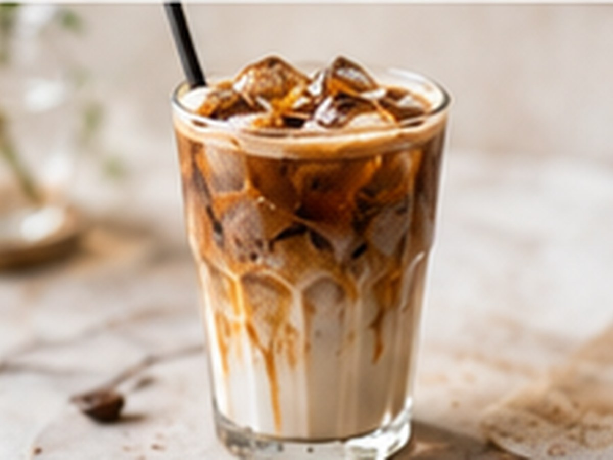

Iced CoffeeIced Coffee
Iced Latte
Der Latte, kalt serviert.
⏱3 Min.
📶Einfach
☕1 Portion
🫘Zutaten
- Espresso1 Shot
- Eiswürfelnach Bedarf
- Milch, kalt180 ml
📋Zubereitung
- 1Glas mit Eiswürfeln füllen.
- 2Kalte Milch eingießen.
- 3Espresso darüber gießen.
💡
Kaffee für dieses Rezept entdeckenLeNoKo Shop
→
Kaffee-Tipp
Peru trifft Indien ist unser Latte-Favorit – süß, mit Karamell- und Marzipan-Aromen.